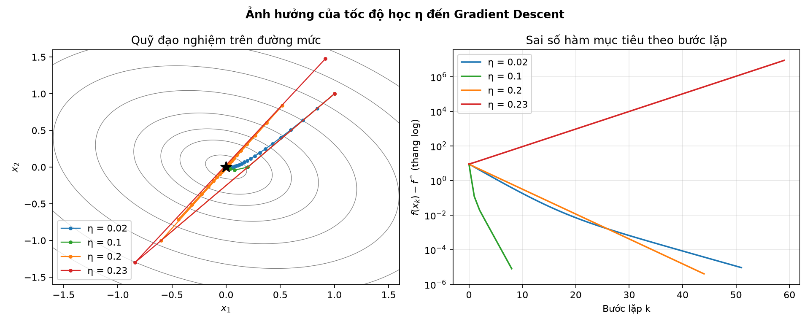
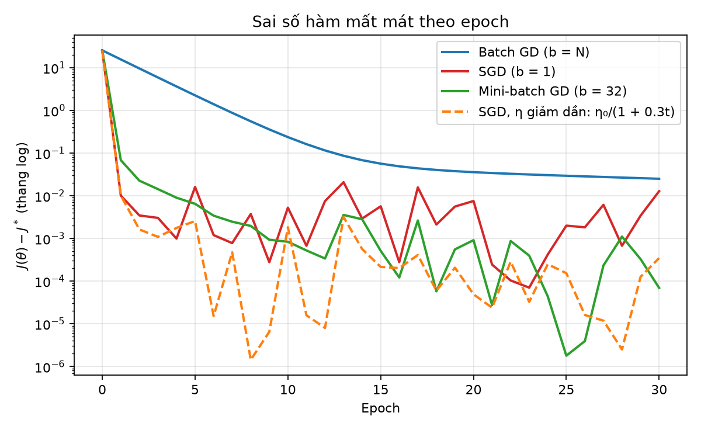
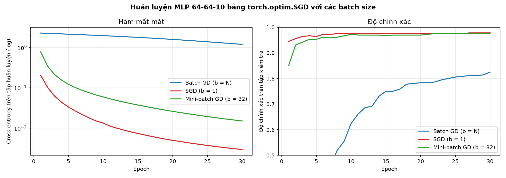

Chưa biết gradient, NumPy hay mạng nơ-ron? Bắt đầu bằng ba điểm dữ liệu. Tính một bước bằng tay. Sau đó tìm đúng phép tính ấy trong code.
Tham số mới=Tham số cũ−Đi bao xa?η×Đi theo hướng nào?gradient
Đọc lần đầu
Đọc mục 0 để biết vấn đề cần giải quyết, input và output. Mục 1–3 giúp hiểu cơ chế. Mục 4–8 nối toán với code thật. Mục 9–11 giúp đọc kết quả, chạy demo và tự kiểm tra. Mục 13 có kịch bản demo 5 phút để luyện thuyết trình.
Học bằng thao tác
Bấm Đi 1 bước, đọc số thay vào công thức rồi dự đoán bước tiếp. Bạn không cần cài Python để thử mô phỏng.
Phạm vi: GD, SGD, Mini-batch GD và 5 script của đề tài. Hình kết quả lấy từ lần chạy đã lưu; mô phỏng tính trực tiếp bằng JavaScript.
00
Bài toán này giải quyết vấn đề gì?
Ta muốn máy tìm ra các tham số giúp dự đoán gần với dữ liệu đã biết, thay vì tự thử từng con số bằng tay.
Ví dụ, một mô hình dự đoán giá từ diện tích có các hệ số cần điều chỉnh. Chọn hệ số không tốt sẽ dự đoán lệch; chọn tốt sẽ giảm sai lệch trên dữ liệu huấn luyện. GD, SGD và Mini-batch GD là ba cách điều chỉnh những hệ số đó bằng gradient. Chúng là thuật toán tối ưu, không phải ba bộ dữ liệu hay ba kiến trúc mạng khác nhau.
Một ví dụ nhỏ, đủ để hiểu toàn bộ quy trình
Trong guide, ta dùng ba cặp số minh họa (1,1), (2,3), (3,2), không gán đơn vị giá hay diện tích. Chọn mô hình ŷ = wx: đưa x vào, nhân với w để ra dự đoán. Bài toán là tìm w làm tổng sai lệch giữa ŷ và y nhỏ nhất.
Input · Đầu vào của quá trình học
Dữ liệu: X=[1,2,3], y=[1,3,2]. X là đầu vào; y là đáp án đúng để học.
Mô hình: ŷ=wx; cần tìm tham số w.
Hàm mất mát: J(w)=⅙Σᵢ(wxᵢ−yᵢ)².
Cấu hình: w₀=0, η=0.1; chọn GD, SGD hoặc Mini-batch và ngân sách số bước.
Output · Đầu ra của quá trình học
Tham số sau học: một giá trị w. Sau đúng 3 bước GD: w≈0.787704.
Chất lượng: loss J(w) để biết còn sai bao nhiêu; không phải chỉ nhìn w lớn hay nhỏ.
Lịch sử: w, gradient, loss theo bước để xem quá trình học.
Mốc tối ưu để đối chiếu: w*=13/14≈0.928571 nếu giải bài này đến nghiệm tối ưu. Không đồng nhất với kết quả sau 3 bước.
Học xong rồi dùng kết quả như thế nào?
Dữ liệu có đáp án (X, y)Huấn luyện giảm J(w)Tham số học được wDự đoán mẫu mới ŷ = wx mới
Khi huấn luyện: biết cả x và y, dùng y để tính sai số và điều chỉnh w. Khi dự đoán: chỉ cần x mới và w đã học. Ví dụ nếu dùng nghiệm tối ưu w*=13/14, với x mới=4 thì ŷ=4×13/14≈3.714286. Đây là dự đoán của mô hình, không phải đáp án thực tế đã được bảo đảm.
Phân biệt dữ liệu và siêu tham số: X, y là dữ liệu; w là tham số được thuật toán học; η, số epoch, batch_size là các lựa chọn bạn thiết lập. Đổi η không phải đổi đáp án đúng y.
Cụ thể từng file của đề tài nhận gì và trả gì?
Input và output của 5 script Python hiện có
File
Input được chuẩn bị ở đâu?
Output quan sát được
01_vi_du_tinh_tay.py
Hàm x₁²+x₂² và 3 cặp (x,y) viết sẵn trong code; η=0.1.
Bảng từng bước x/w, gradient và giá trị hàm in trong terminal; không tạo ảnh.
02_gd_ham_hai_bien.py
Hàm toàn phương f, gradient, điểm (1,1) và các cách chọn bước. Không có X, y huấn luyện.
Điểm gần nghiệm, số bước, kiểm tra hội tụ; 2 ảnh về tốc độ học và chọn bước.
03_so_sanh_gd_sgd_minibatch.py
Dữ liệu hồi quy được sinh trong code, seed cố định; batch_size, lr, epochs theo cấu hình.
Hệ số hồi quy θ, J−J*, số cập nhật, thời gian; 3 ảnh so sánh.
04_thu_vien_sklearn.py
Bộ diabetes, breast_cancer, digits có sẵn trong scikit-learn; chia train/test và chuẩn hóa.
Dự đoán từ các mô hình; R² hoặc accuracy, loss huấn luyện; 1 ảnh tổng hợp.
05_pytorch_mang_no_ron.py
Ảnh digits 8×8, nhãn 0–9; mạng MLP, tốc độ học và kích thước lô.
Trọng số mạng trong bộ nhớ; loss, accuracy, thời gian; 1 ảnh hai đồ thị.
Bạn không phải gõ X, y hoặc nạp CSV để chạy demo hiện tại. Các script đã chuẩn bị dữ liệu. Kết quả số in ra terminal, hình lưu vào thư mục hinh. Code chưa xuất mô hình thành file .pkl hay .pt.
Giả sử bạn có các cặp số đầu vào x và kết quả đúng y. Bạn muốn dự đoán y từ x. Ta thử quy tắc ŷ = wx. Dấu mũ trên ŷ nghĩa là “dự đoán”; w là con số được phép điều chỉnh.
Bộ dữ liệu dùng xuyên suốt ví dụ tính tay
Mẫu i
xᵢ
yᵢ đúng
ŷ khi w=0
ŷ khi w=1
1
1
1
0
1
2
2
3
0
2
3
3
2
0
3
Mẫu 2 muốn w=1.5, mẫu 3 muốn w≈0.667. Một w không thể khớp cả ba. Ta cần một thước đo tổng sai lệch để chọn phương án dung hòa.
Loss: biến “dự đoán sai” thành một con số
Sai số: rᵢ=ŷᵢ−yᵢ=wxᵢ−yᵢ. Âm nghĩa là dự đoán thấp hơn thực tế.
Bình phương: rᵢ² không âm, nên sai số âm và dương không triệt tiêu nhau. Sai lớn bị phạt mạnh hơn.
Trung bình: cộng cả N mẫu rồi chia N. Nhân thêm ½ để đạo hàm gọn hơn, không đổi vị trí nghiệm tối ưu.
Ở w=0: J(0)=(1+9+4)/6=7/3≈2.333333. Ở w=1: J(1)=(0+1+1)/6=1/3. Vậy w=1 tốt hơn theo loss này, nhưng chưa chắc tốt nhất.
Đạo hàm: đổi w một chút, loss đổi ra sao?
Đạo hàm J′(w) là độ dốc. Nếu dương, tăng w một chút thường làm loss tăng, nên ta giảm w. Nếu âm, ta tăng w. Đây là lý do công thức cập nhật có dấu trừ.
J(w + Δw) ≈ J(w) + J′(w)Δw Chọn Δw = −ηJ′(w) ⇒ thay đổi xấp xỉ = −η[J′(w)]² ≤ 0.
Lập luận này dành cho bước nhỏ. Nếu η quá lớn, xấp xỉ cục bộ không còn đủ tốt và loss có thể tăng.
Tự lấy đạo hàm của loss bình phương
Đặt u(w)=wxᵢ−yᵢ. Đạo hàm ½u² là u×u′. Dữ liệu xᵢ, yᵢ cố định, nên u′=xᵢ và fᵢ′(w)=(wxᵢ−yᵢ)xᵢ. Đạo hàm của trung bình bằng trung bình các đạo hàm.
Ba mẫu cho f₁′=w−1, f₂′=4w−6, f₃′=9w−6. Vì vậy J′(w)=(14w−13)/3. Giải J′=0 được w*=13/14. J″=14/3>0 nên đây là cực tiểu duy nhất. J*=9/28≈0.321429, không phải 0.
Nhiều tham số thì dùng gradient
Nếu ŷ=c+wx, cần chỉnh cả c lẫn w. Đặt θ=[c,w]. Gradient ∇J(θ) là véctơ [∂J/∂c, ∂J/∂w]. θ mới=θ−η∇J(θ) cập nhật từng thành phần.
“Bậc một” nghĩa là dùng đạo hàm bậc một để chọn hướng đi, không có nghĩa hàm mục tiêu tuyến tính. GD vẫn có thể dùng cho hàm bậc hai hoặc mạng nơ-ron.
Thử trước với f(z)=z²
z là biến cần tối ưu, không phải x của bộ dữ liệu. f′(z)=2z nên z mới=(1−2η)z. Bắt đầu z₀=2. Thử η=0.1, 0.5, 1 và 1.1.
Trục ngang: bước k. Trục dọc: tham số z. Tính trực tiếp từ zₖ₊₁=(1−2η)zₖ.
Vì sao 0<η<1 thì hội tụ với z²?
zₖ=(1−2η)ᵏz₀. Để về 0 cần |1−2η|<1, tức 0<η<1. η=1 giữ độ lớn và đảo dấu; η=1.1 nhân độ lớn với 1.2 mỗi bước. Ngưỡng này thuộc riêng f(z)=z², không dùng cho mọi bài toán.
Bảng ký hiệu
xᵢ, yᵢ
Đầu vào và đáp án đúng của mẫu i.
θ, w
Tham số cần học; w là một số, θ thường là véctơ.
N, d
Số mẫu và số chiều của θ trong phân tích chi phí ở đây.
J, fᵢ
Loss trung bình toàn tập và loss một mẫu.
g, ∇J
Gradient dùng ở bước hiện tại và gradient toàn bộ loss.
η / lr
Tốc độ học: số dương điều khiển độ dài bước.
k, epoch
k đếm cập nhật; epoch là một lượt dữ liệu khi huấn luyện theo lượt.
B, batch_size
Tập chỉ số một lô và số mẫu dự kiến trong lô.
w*, J*
Nghiệm tối ưu và loss tối ưu; dấu * ở đây không phải nhân.
02
Ba thuật toán khác nhau ở đâu?
Cả ba tính gradient g rồi làm w←w−ηg. Khác biệt là những mẫu nào được dùng để tính g. Giữ dữ liệu ở mục 1, w₀=0, η=0.1.
2.1. Gradient Descent: hỏi cả tập dữ liệu
Ý tưởng: tính gradient cả ba mẫu ở cùng w, lấy trung bình rồi cập nhật một lần. “GD” trong guide là Batch GD.
g = [(w−1)+(4w−6)+(9w−6)]/3 = (14w−13)/3
Khởi tạo w
Lặp tối đa K bước:
g = trung bình gradient toàn bộ N mẫu
Nếu |g| đủ nhỏ: dừng
w = w - η × g
w₀=0: gradient −1,−6,−6; trung bình g₀=−13/3.
w₁=0−0.1×(−13/3)=0.433333…
Tại w₁: g₁=−2.311111… → w₂=0.664444…
Tại w₂: g₂=−1.232592… → w₃=0.7877037…
Ba cập nhật dùng 9 gradient thành phần. Gradient chính xác đối với J không có nghĩa mỗi bước đến nghiệm ngay.
2.2. SGD: hỏi một mẫu rồi cập nhật ngay
Ý tưởng: chọn một mẫu i và dùng g=(wxᵢ−yᵢ)xᵢ. Có thể lấy mẫu ngẫu nhiên hoặc xáo trộn rồi duyệt từng mẫu. Ví dụ cố định chuỗi 1→2→3 để tính tay.
Khởi tạo w
Lặp tối đa K bước:
i = chỉ số mẫu được chọn ngẫu nhiên
g = (w × x[i] - y[i]) × x[i]
w = w - η[k] × g
Mẫu 1: g=(0×1−1)×1=−1 → w₁=0.1.
Mẫu 2 tại w mới: g=(0.1×2−3)×2=−5.6 → w₂=0.66.
Mẫu 3: g=(0.66×3−2)×3=−0.06 → w₃=0.666.
Chỉ 3 gradient thành phần. Mẫu 3 “muốn” w≈0.667 nên kéo về phía nó, trong khi nghiệm toàn tập≈0.929: đây là nhiễu do lấy mẫu.
Chọn đều, độc lập một mẫu mỗi bước thì E[g|w]=J′(w), đúng theo kỳ vọng, không phải từng bước. Xáo trộn không hoàn lại theo epoch là biến thể khác; không áp dụng máy móc giả thiết độc lập.
2.3. Mini-batch GD: hỏi một nhóm nhỏ
Ý tưởng: chọn lô B, tính mọi gradient tại cùng w, lấy trung bình rồi mới cập nhật. Dùng lô hai mẫu: {1,2}→{3,1}→{2,3}.
Khởi tạo w
Lặp tối đa K bước:
B = chọn nhóm nhỏ chỉ số mẫu
g = tổng gradient trên B / số mẫu thực tế trong B
w = w - η[k] × g
{1,2}, w=0: g=(−1−6)/2=−3.5 → w₁=0.35.
{3,1}, w=0.35: gradient −2.85 và −0.65; trung bình −1.75 → w₂=0.525.
{2,3}, w=0.525: gradient −3.9 và −1.275; trung bình −2.5875 → w₃=0.78375.
Dùng 6 gradient thành phần. Cập nhật sau từng mẫu trong lô sẽ chuyển thành SGD, không còn trung bình tại cùng w.
Ba lô được chọn riêng từng bước, có phần tử trùng nhau, không phải chia một epoch. Code 03 xáo trộn rồi chia lô không giao nhau trong mỗi epoch.
Cùng ba bước chưa chắc cùng chi phí
Sau 3 cập nhật
GD
SGD
Mini-batch
w cuối
0.787704
0.666000
0.783750
Gradient thành phần
9
3
6
Chi phí / cập nhật*
O(Nd)
O(d)
O(bd)
*Giả sử gradient mỗi mẫu tốn O(d). Đây chỉ là ví dụ cơ chế, không kết luận thuật toán nào luôn tốt nhất.
Hiểu epoch bằng 5 mẫu và batch_size=2
Các lô [1,2], [3,4], [5] tạo 3 cập nhật=⌈5/2⌉. Lô cuối chia cho 1, không cho 2. GD có 1 cập nhật/epoch, SGD có 5. b=N là GD; b=1 là SGD.
03
Nhìn tận mắt từng bước cập nhật
Mô phỏng chạy 3 bước của code 01, với mẫu/lô cố định. Đổi phương pháp hoặc η sẽ bắt đầu lại từ w=0. Đọc bảng trước khi bấm bước kế tiếp.
Phép tính của bước vừa thực hiện
Đường J(w) toàn tập. Điểm đánh số là w sau cập nhật; dấu sao chỉ w*=13/14. Nguồn: ba mẫu ở mục 1.
Lịch sử cập nhật
Bước
Mẫu dùng
w trước
g
w sau
J toàn tập sau bước
Tự hỏi: SGD đến mẫu 3 có gradient nhỏ nhưng còn xa w*, vì sao? Vì mẫu 3 gần khớp, còn toàn tập chưa tối ưu.
04
Đọc Python từ những ký hiệu nhỏ nhất
Code demo là Python; HTML/CSS/JS ở guide giúp đọc và thử, không tự thực thi Python. Trước khi đọc code 01, nhận diện:
Ký hiệu
Nghĩa
Ví dụ
import numpy as np
Nạp NumPy, đặt tên ngắn np.
np.array([1,2,3]) tạo mảng.
def f(x):
Định nghĩa hàm; thụt dòng xác định thân hàm.
return 2*x trả kết quả.
range(3)
Dãy 0,1,2; không gồm điểm cuối.
Lặp 3 lần, không phải 4.
x[0]
Đếm chỉ số từ 0.
Mẫu 1 trên giấy có chỉ số 0.
a*b / a@b
Với mảng NumPy: nhân từng phần tử / nhân ma trận.
np.array([1,2])*[3,4] → [3,8].
x**2
Lũy thừa.
3**2=9; ^ không phải lũy thừa.
x.copy()
Tạo bản sao mảng.
Lưu tọa độ riêng từng bước.
f"{w:.4f}"
In w với 4 chữ số thập phân.
Không làm tròn biến w dùng tính tiếp.
Code 01: công thức gradient thành một hàm
w
Tham số hiện tại, một số thực.
idx
Chỉ số được chọn: [0,1,2] là GD; [0] là SGD; [0,1] là lô hai mẫu.
X[idx], Y[idx]
idx=[0,1] lấy X=[1,2], Y=[1,3].
w*X[idx]-Y[idx]
Tính sai số. Với w=0: [−1,−3].
… * X[idx]
Nhân sai số với x thành gradient từng mẫu: [−1,−6].
np.mean(…)
Trung bình=(−1−6)/2=−3.5. Đầu ra là gradient, không phải loss.
Cùng hàm, khác chỉ số đầu vào
np.arange(N) tạo đủ chỉ số. w_new giữ giá trị mới để in cả trước/sau; w=w_new chuẩn bị bước kế. Đặt w=0 trước mỗi phương pháp để cùng điểm xuất phát.
enumerate trả số bước k và chỉ số i. np.array([i]) là mảng một phần tử nên vẫn gọi được hàm chung.
Danh sách lồng nhau chứa ba lô. [i+1 for i in idx] chỉ đổi số hiển thị sang đếm từ 1; phép tính vẫn dùng chỉ số 0-based.
Phần A code 01 làm gì?
f(x₁,x₂)=x₁²+x₂² có gradient 2x. x₀=(2,2), η=0.1 → mỗi tọa độ nhân 0.8: (2,2)→(1.6,1.6)→(1.28,1.28).
Vòng range(6) in k=0 đến k=5 trước cập nhật. Phép cập nhật sau lần in cuối không hiển thị. Muốn đọc “sau 5 bước”, xem k=5.
0.78375 chính xác có thể in thành 0.7837 do số dấu phẩy động và làm tròn. Đối chiếu bằng ngưỡng sai số như 10⁻⁸ thay vì so chuỗi.
05
Code 02: một hướng, ba cách chọn bước
Không cần dữ liệu học máy: tối thiểu hóa trực tiếp f(x₁,x₂)=3x₁²+2x₁x₂+4x₂²+10. Nghiệm (0,0), f*=10, xuất phát (1,1).
Đạo hàm theo x₁ là 6x₁+2x₂; theo x₂ là 2x₁+8x₂. Tại (1,1), g=(8,10). η=0.1 cho bước đầu (1,1)−0.1(8,10)=(0.2,0). f giảm từ 19 xuống 10.12.
dtype=float
Mảng số thực để cập nhật phần thập phân.
quy_dao=[x.copy()]
Lưu cả điểm xuất phát: số điểm bằng số cập nhật cộng 1.
np.linalg.norm(g)<eps
Chuẩn Euclid √(g₁²+g₂²) nhỏ hơn ngưỡng. Đây là gradient toàn bộ hàm f.
chon_buoc(x,g)
Một hàm truyền vào để chọn độ dài bước. Hướng −g giữ nguyên.
isfinite, norm(x)>1e6
Chặn NaN/vô cực hoặc độ lớn quá mức. Dừng vì lý do này không phải hội tụ.
Bước cố định
lambda x,g:eta là hàm nhỏ luôn trả eta, không dùng x hay g. Dễ cài nhưng cần chọn η phù hợp.
Bước chính xác theo tia
H=[[6,2],[2,8]] là Hessian hằng. Giải đạo hàm của φ(λ)=f(x−λg) bằng 0 cho λ=(gᵀg)/(gᵀHg). Tại (1,1): λ=164/1504≈0.109043, x mới≈(0.127660,−0.090426).
@ là tích vô hướng/ma trận. Công thức đặc biệt này dành cho hàm toàn phương H xác định dương, không phải loss bất kỳ. H hỗ trợ chọn bước; hướng vẫn là −g.
Quay lui Armijo
Thử λ=1. Nếu chưa giảm đủ, nhân λ với α=0.5 rồi thử lại. m₁=0.01 quy định mức giảm tối thiểu tương đối. Chấp nhận khi f(x−λg)≤f(x)−m₁λ‖g‖²; while chạy khi điều kiện còn bị vi phạm.

Code 02. Đường sai số dùng thang log; η=0.23 phân kỳ trong bài này.Vì sao ngưỡng gần 0.2165?
H có trị riêng 7±√5, L≈9.236068. Hàm toàn phương xác định dương này hội tụ từ mọi điểm khi 0<η<2/L≈0.21654. η=0.2 vẫn hội tụ nhưng có thể dao động; 0.23 vượt ngưỡng. Đừng nhầm với điều kiện đủ thường dùng η≤1/L cho hàm lồi L-trơn.
06
Code 03: hiểu “dòng gradient” dài nhất
Chuyển từ ŷ=wx sang ŷ=c+wx. Đặt θ=[c,w] và thêm cột toàn 1 vào X. Code gốc cũng gọi hệ số chặn là b; guide dùng c để không nhầm với kích thước lô b.
X@theta tạo dự đoán. Trừ y thành sai số r. r*r bình phương từng phần tử, mean lấy trung bình, nhân 0.5 thành J=(1/2N)‖Xθ−y‖².
Khởi tạo có thể tái lập
default_rng(seed)
Bộ sinh ngẫu nhiên. Cùng seed giúp lặp lại thứ tự trong cùng thiết lập, không bảo đảm thời gian giống hệt.
N,d=X.shape
Số hàng và cột. Có cột 1 thì ví dụ trên d=2.
np.zeros(d)
c=0,w=0; mọi cấu hình cùng điểm xuất phát.
Các danh sách ls_…
Lưu loss, thời gian, quỹ đạo để vẽ hình; không thuộc công thức cập nhật.
Vòng huấn luyện từng dòng
for epoch…: nhiều lượt dữ liệu, mỗi lượt có thể nhiều cập nhật.
eta=lr/(1+decay*epoch): decay=0 giữ bước; lr=0.01, decay=0.3, epoch=1 cho η≈0.007692.
rng.permutation(N): xáo trộn chỉ số, không mất/nhân đôi mẫu trong lượt.
range(0,N,batch_size): vị trí đầu lô. N=5,b=2 → 0,2,4.
Cắt chi_so[bat_dau:bat_dau+batch_size] lấy chỉ số lô; lô cuối tự ngắn lại nếu thiếu mẫu.
X[lo],y[lo]: lấy các hàng cùng nhãn. Không xáo trộn X và y độc lập.
Xb.T@(Xb@theta-yb)/len(lo): gradient trung bình lô. Xem phép tính số ngay dưới.
theta=theta-eta*g: cập nhật đồng thời mọi tham số.
quy_dao.append(theta.copy()): lưu mỗi cập nhật nếu bật. Loss và thời gian lưu mỗi epoch, nên các lịch sử có độ dài khác nhau.
Giải phẫu bằng ma trận 2×2
Lô hai mẫu đầu, θ=[0,0]. m=2 mẫu, d=2 tham số:
Phép tính
Giá trị
Kích thước
Xb
[[1,1],[1,2]]
(2,2)
Xb@θ
[0,0]
(2,)
r=Xb@θ−yb
[−1,−3]
(2,)
Xb.T@r
[−4,−7]
(2,)
g=tổng/2
[−2,−3.5]
(2,)
θ mới=[0,0]−0.1g
[0.2,0.35]
(2,)
−2 là đạo hàm theo c; −3.5 theo w. Cột 1 giúp cùng một phép nhân tính cả hai. Đây không phải ví dụ một tham số: từ bước thứ hai, w có thể khác vì c cũng thay đổi.
Dữ liệu và nghiệm chuẩn
uniform sinh đầu vào, normal thêm nhiễu. y=3x+4+nhiễu không nằm chính xác trên một đường thẳng. column_stack ghép cột 1 và x. solve(X.T@X,X.T@y) giải phương trình chuẩn làm mốc, không phải một bước GD. Cần X đủ hạng cột; nếu suy biến, dùng np.linalg.lstsq hoặc cách phù hợp.
Chia gradient cho batch_size cố định làm lô cuối thiếu mẫu bị giảm trọng số. Code dùng len(lo) để tính đúng trung bình.
07
Code 04: nhờ thư viện làm vòng lặp
Code 03 tự tính gradient; code 04 giao cho scikit-learn. Bạn vẫn chọn dữ liệu, tiền xử lý, loss, siêu tham số. Hồi quy dự đoán số; phân loại dự đoán nhãn.
Chia trước, chuẩn hóa sau
test_size=0.2
80% để học, 20% đánh giá. Không dùng đáp án test cập nhật tham số.
stratify=y
Phân loại: giữ gần cùng tỷ lệ lớp ở hai tập. Hồi quy để None.
StandardScaler().fit(Xtr)
Chỉ học trung bình μ và độ lệch chuẩn σ từ train.
transform(Xtr),transform(Xte)
Áp dụng cùng (x−μ)/σ. Fit toàn bộ dữ liệu khiến thông tin test lọt vào tiền xử lý.
Chuẩn hóa đưa đặc trưng về thang gần nhau. Nếu một cột hàng nghìn, cột khác gần 0.01, độ lớn gradient hai hướng có thể rất khác, khó dùng cùng một tốc độ học.
SGDRegressor: hồi quy
squared_error chọn loss bình phương; penalty=None không thêm regularization. eta0 là bước ban đầu; invscaling dùng ηₜ=eta0/tpower_t theo bộ đếm cập nhật của thư viện. max_iter giới hạn epoch cho fit, tol tham gia dừng. fit huấn luyện, predict dự đoán.
LinearRegression cho nghiệm bình phương tối thiểu số học để đối chiếu. R²=1−SSE/SST: 1 khớp hoàn hảo, 0 tương đương dự đoán trung bình tập đánh giá, có thể âm. R²=0.326 không nghĩa chính xác 32.6%.
Phân loại và dữ liệu đến theo khối
log_loss dùng loss logistic; l2, alpha thêm phạt hệ số. Accuracy đếm dự đoán đúng chia tổng số mẫu; lớp mất cân bằng có thể khiến accuracy đánh lừa.
partial_fit học tiếp trên dữ liệu mới; classes khai báo tập nhãn. Khối 32 mẫu ở đây vẫn được SGDClassifier cập nhật theo mẫu bên trong, không phải trung bình gradient cả khối. Tài liệu SGDClassifier.
Mini-batch thực sự với MLPClassifier
solver="sgd",batch_size=b điều khiển cập nhật theo lô. hidden_layer_sizes=(64,) tạo một lớp ẩn 64 nút; momentum=0 và alpha=0 bỏ hai hiệu ứng bổ sung. lr cũng được chọn riêng theo b, nên so sánh không cô lập chỉ một yếu tố. Tài liệu MLPClassifier.
08
Code 05: gradient trong mạng nơ-ron
digits gồm ảnh chữ số 8×8. Trải phẳng thành 64 đầu vào. Nhãn nguyên 0…9. Mạng học ánh xạ 64 số sang 10 điểm số cho 10 lớp.
Ảnh 8×8 64 đầu vàoLinear(64,64) + ReLULinear(64,10) 10 logitsCross-entropy so với nhãn
Linear học trọng số và hệ số chặn. ReLU(z)=max(0,z) tạo phi tuyến. Logits là điểm số thô, chưa phải xác suất. CrossEntropyLoss nhận logits và nhãn lớp; không thêm softmax trước loss này.
Dữ liệu thành tensor
float32 cho đặc trưng; long cho nhãn nguyên. TensorDataset ghép ảnh/nhãn đúng; DataLoader lấy thành lô. Code hiện tại chạy CPU, không tự dùng GPU.
Mạng, optimizer, loader
manual_seed đặt seed trước khi tạo mạng để cùng cách khởi tạo. model.parameters đưa trọng số cần học cho optimizer. batch_size ở loader quyết định số mẫu mỗi cập nhật: N,1,32. Tên torch.optim.SGD không bắt buộc batch_size=1; nó nhận gradient được loss/backward tạo.
Bốn dòng quan trọng nhất
optimizer.zero_grad() xóa gradient cũ. PyTorch cộng dồn gradient mặc định; bỏ dòng này sẽ cộng lịch sử ngoài ý định.
loss=ham_mat_mat(model(xb),yb) dự đoán trên lô, tính cross-entropy trung bình theo thiết lập hiện tại.
loss.backward() lan truyền ngược bằng quy tắc dây chuyền, điền đạo hàm vào parameter.grad. Chưa đổi trọng số.
optimizer.step() cập nhật trọng số. SGD không momentum ở đây thực hiện θ←θ−ηg.
no_grad không ghi đồ thị đạo hàm khi chỉ đo kết quả. argmax(1) chọn lớp điểm cao nhất mỗi hàng; so với yte ra đúng/sai, float rồi mean thành accuracy. item lấy số Python từ tensor một phần tử.
Demo đo test mỗi epoch để vẽ hình. Chọn η, epoch hay dừng sớm nên dùng validation riêng, giữ test cho đánh giá cuối. Mạng có dropout/batch normalization còn cần model.train()/model.eval(); Linear–ReLU ở đây không có các lớp đó.
1437 mẫu train, b=32 → ⌈1437/32⌉=45 cập nhật/epoch; 30 epoch → 1350. SGD b=1 có 43 110 cập nhật; GD chỉ 30. “Cùng 30 epoch” không đồng nghĩa cùng số lần đổi trọng số.
09
Đọc biểu đồ, giữ đúng phạm vi kết luận

Code 03, N=1000, 30 epoch. Ảnh kết quả đã lưu trong bài làm.
Đọc trục: ngang là epoch; dọc J−J*, không phải accuracy.
Thang log: 10⁻² xuống 10⁻³ là giảm 10 lần, không phải cùng một mức trừ tuyệt đối.
Cấu hình: GD lr=0.1, SGD=0.01, Mini-batch=0.05,b=32. Không chỉ b thay đổi.
Dao động: SGD chọn các mẫu khác nhau nên gradient nhiễu. Loss mẫu giảm không bảo đảm loss toàn tập giảm.
Ngân sách: GD 30, SGD 30 000, Mini-batch 960 cập nhật. Thời gian còn phụ thuộc phần cứng/cài đặt.
Số liệu đã lưu: hồi quy tuyến tính
Phương pháp
η
Cập nhật
J−J*
GD
0.1
30
≈2.50×10⁻²
SGD
0.01
30 000
≈1.28×10⁻²
Mini-batch 32
0.05
960
≈6.96×10⁻⁵
Cách nói đúng: “Trong cấu hình này, Mini-batch có sai số nhỏ nhất sau 30 epoch.” Muốn kết luận rộng cần nhiều seed, chọn siêu tham số trên validation và so thêm theo thời gian.

Code 05: MLP 64–64–10; 1437 train, 360 test, 30 epoch; tốc độ học khác nhau.
Loss phản ánh mức tự tin của dự đoán; accuracy chỉ đếm lớp đúng. Loss có thể giảm khi accuracy đứng yên. Thời gian cũ (GD 0.67 s; SGD 27.08 s; Mini-batch 1.44 s) chỉ minh họa một lần chạy, không cam kết trên máy khác.
Vì sao không dừng SGD khi gradient một mẫu gần 0?
Ở w=0.66, gradient mẫu 3 là −0.06 nhưng toàn tập là (14×0.66−13)/3≈−1.253333. Một mẫu gần khớp không nghĩa tất cả đã khớp. Dùng ngân sách, loss kiểm định hay tiêu chí phù hợp.
Đọc nốt phần vẽ hình và đo thời gian trong code
np.meshgrid
Tạo lưới tọa độ để tính loss trên nhiều điểm. Đây là dữ liệu cho hình đường mức, không phải dữ liệu huấn luyện.
ax.contour
Nối các điểm có cùng giá trị loss. Đường tham số đi qua các đường mức giúp hình dung hướng tối ưu.
plot, semilogy, loglog
Vẽ tuyến tính, chỉ trục y log, hoặc cả hai trục log. Phải đọc nhãn trục trước khi so các khoảng cách.
np.maximum(sai_so,1e-12)
Chặn giá trị rất nhỏ trước khi vẽ log vì log(0) không xác định. Nó sửa giá trị hiển thị, không sửa tham số đã huấn luyện.
time.perf_counter()
Lấy mốc thời gian. Hiệu hai mốc là thời gian đã trôi qua. Trong code 03, loss ghi sau epoch nằm ngoài đoạn đo; code 05 đo cả đánh giá mỗi epoch. Vì vậy không so trực tiếp hai số thời gian từ hai script như cùng một phép đo.
fig.savefig(...)
Lưu hình vào file; dpi quy định độ phân giải. tight_layout điều chỉnh khoảng cách; close giải phóng hình khỏi bộ nhớ.
zip, items()
zip ghép các danh sách để duyệt cùng nhau; items trả cặp khóa và giá trị của từ điển kết quả. Chúng giúp tổ chức/vẽ từng cấu hình, không thay đổi thuật toán.
10
Hướng dẫn chạy code từng bước
Chạy file 01 trước để thấy ngay các phép tính tay trong terminal. Sau đó chạy file 02–05 để xem hình và mô hình học máy.
Đọc guide và chạy Python là hai việc riêng. Mở guide/index.html chỉ cần trình duyệt; các nút mô phỏng chạy JavaScript. Để chạy 5 file .py, cần Python và thư viện bên dưới. Dữ liệu đã có sẵn trong code hoặc scikit-learn, không cần tải CSV.
Bước 1 · Mở đúng thư mục
Mở File Explorer, vào thư mục BTL_FirstOrderMethods\code.
Mở PowerShell hoặc Terminal tại thư mục đó. Bạn cũng có thể mở PowerShell bình thường rồi chạy lệnh cd dưới đây.
Kiểm tra dir có đủ các file bắt đầu bằng 01, 02, 03, 04, 05 và requirements.txt.
cd "E:\Subjects\DT_ThacSi\TUH-UD\BTL_FirstOrderMethods\code"
dir
python --version
Đường dẫn trên là đường dẫn của bài làm trên máy này; đổi lại nếu bạn chép sang chỗ khác. Dùng Python 3.10 trở lên và phiên bản tương thích với các gói. Nếu máy có Python Launcher mà không nhận lệnh python, thử py --version.
Bước 2 · Tạo môi trường và cài gói
Chạy các lệnh sau trong cùng cửa sổ PowerShell. .venv là môi trường thư viện riêng cho demo; chỉ cần tạo một lần. Không cần chạy lệnh kích hoạt vì ta gọi thẳng Python bên trong nó.
Nếu dùng py, thay lệnh đầu bằng py -m venv .venv; các lệnh có đường dẫn .\.venv\Scripts\python.exe giữ nguyên. Cài gói lần đầu cần Internet; PyTorch có thể mất thời gian tải.
Chỉ muốn thử code 01–04 trước, chưa cần PyTorch?
Sau khi tạo .venv, thay lệnh cài requirements bằng:
Kết quả cần thấy: terminal in phần A (GD trên hàm hai biến) và phần B (3 phương pháp trên 3 mẫu). Trong phần B, hãy tìm các con số sau:
Phương pháp
w sau bước 1
w sau bước 3
Gradient thành phần đã dùng
GD
≈0.4333
≈0.7877
9
SGD
0.1000
0.6660
3
Mini-batch
0.3500
0.78375 trước làm tròn
6
Script in 4 chữ số sau dấu chấm, nên bạn có thể thấy 0.7837 ở Mini-batch do số dấu phẩy động. Code 01 không tạo ảnh; terminal trở lại dấu nhắc lệnh sau khi chạy là bình thường.
Bước 4 · Chạy các demo còn lại
Chạy từng lệnh và đợi lệnh đó kết thúc trước khi chuyển sang file tiếp theo:
.\.venv\Scripts\python.exe 02_gd_ham_hai_bien.py
Đọc kết quả: η=0.1 tiến về (0,0), f≈10; η=0.23 không hội tụ trong thí nghiệm này. Mở hinh1_learning_rate.png và hinh2_chon_buoc.png để xem.
Đọc kết quả: bảng hệ số hồi quy, loss J−J* và thời gian cho GD/SGD/Mini-batch; sau đó là khảo sát batch size. Mở hình 3–5 để so quỹ đạo, loss và thời gian.
.\.venv\Scripts\python.exe 04_thu_vien_sklearn.py
Đọc kết quả: R² cho hồi quy, accuracy cho phân loại, loss/accuracy của MLP. Đừng hiểu R² là tỷ lệ phân loại đúng. Hình xuất ra là hinh6_sklearn.png.
Đọc kết quả: bảng loss train, accuracy test, số cập nhật và thời gian của mạng MLP. Hình xuất ra là hinh7_pytorch_mlp.png. SGD một mẫu có hơn 43 nghìn cập nhật nên có thể chậm hơn các cấu hình khác.
Các script dùng backend Agg: lưu hình mà không bật cửa sổ đồ thị. Chạy lại ghi đè ảnh cùng tên. Ảnh trong guide/assets là bản sao đã lưu, chưa tự đổi theo lần chạy mới; xem README của guide nếu muốn đồng bộ lại.
Lỗi thường gặp và cách xử lý
python không được nhận diện
Kiểm tra Python đã cài và có trong PATH. Mở lại terminal; thử py --version nếu có Python Launcher.
Không thấy requirements hoặc .py
Chạy pwd, dir. Cần ở thư mục code, không phải guide.
ModuleNotFoundError
Cài gói bằng đúng interpreter: .\.venv\Scripts\python.exe -m pip install -r requirements.txt, rồi chạy bằng cùng đường dẫn Python.
Không tìm thấy .venv
Tạo môi trường tại thư mục code bằng python -m venv .venv. Nếu đã tạo ở thư mục khác, dùng đúng đường dẫn của môi trường đó.
Lỗi tiếng Việt trong terminal
PowerShell: $env:PYTHONIOENCODING="utf-8" rồi chạy lại script.
Cài torch không được
Đọc lỗi pip để kiểm tra phiên bản Python/hệ điều hành có tương thích không. Có thể chạy 01–04 với ba gói NumPy, Matplotlib, scikit-learn trước.
Loss tăng hoặc NaN
Giảm lr, kiểm tra dữ liệu và chuẩn hóa. Chương trình kết thúc không chứng minh đã hội tụ.
Chạy xong rồi thử sửa gì?
Code 01: đổi η=0.02; dự đoán w₁ của GD≈0.0866667 rồi kiểm tra.
Code 03: thử b=1,32,N; đếm cập nhật/epoch. Giữ cùng dữ liệu, seed và ghi rõ lr.
Code 05: giảm epoch để chạy nhanh thử nghiệm; ghi lr, b, epoch, seed và thời gian cùng accuracy.
11
Đã hiểu đến đâu?
Mỗi câu chọn một đáp án. Phản hồi sẽ giải thích lý do, không chỉ báo đúng/sai.
Giải thích bằng lời của bạn
Vì sao trừ gradient?
Vì sao len(lo) quan trọng ở lô cuối?
backward và step khác nhau thế nào?
Cùng epoch có đồng nghĩa cùng số cập nhật không?
12
Tra code gốc và tài liệu
Khối “Trích code gốc” lấy nguyên văn 5 script, kèm số dòng. Bản nhúng ngày 27/11/2026; nếu sửa Python sau đó, chạy công cụ đồng bộ trong README của guide để cập nhật trích dẫn.
Mở toàn bộ mã nguồn
Mã giả ở mục 2 mô tả thuật toán. Python ghi tên file/số dòng là nguyên văn. JavaScript ở phòng thử tái hiện phép toán cho người học, không thay cho huấn luyện NumPy/PyTorch.
Bài giảng Chuong1C.pdf: GD và chọn độ dài bước.
Báo cáo, 5 script và hình trong BTL_FirstOrderMethods.
Liên kết chính thức cần Internet; bài học, code, ảnh, mô phỏng trong guide dùng ngoại tuyến. Bảo đảm hội tụ cần giả thiết; dùng GD cho mạng không lồi không bảo đảm nghiệm toàn cục.
13
Kịch bản demo code 5 phút
Từ ví dụ ba mẫu đến thí nghiệm một nghìn mẫu: chạy đúng lệnh, chỉ đúng đoạn code và giải thích được kết quả.
Kịch bản dùng 01_vi_du_tinh_tay.py để giải thích phép cập nhật và 03_so_sanh_gd_sgd_minibatch.py để so sánh ba thuật toán. Đọc phần “Lời trình bày” khi luyện nói. Các bảng giải thích và đoạn code giúp bạn chuẩn bị, không cần đọc hết trong 5 phút. Mốc thời gian là mục tiêu luyện tập, có thể điều chỉnh theo tốc độ nói và thời gian chạy trên máy.
Cách luyện: mở guide cạnh VS Code, chuẩn bị môi trường trước, rồi bấm giờ từ bước 1. Tại mỗi bước, thực hiện thao tác, chỉ vào code hoặc kết quả và đọc lời thoại. Dùng các liên kết dưới đây để quay lại đoạn cần tập.
Hai script này không cần PyTorch. Hoàn thành cài đặt trước khi lên trình bày; xem mục 10 nếu cần tạo môi trường ảo hoặc xử lý lỗi thiếu thư viện. Nếu chuyển máy, thay đường dẫn bằng thư mục bài làm trên máy đó.
Chạy thử cả hai file trước buổi demo. Mở sẵn ảnh hinh4_mat_mat.png trong thư mục hinh và phóng to chữ trong VS Code, Terminal. File 03 chạy cả thí nghiệm A và B, nhưng lời trình bày dưới đây tập trung vào A. Khi chạy lại, các ảnh cùng tên sẽ được ghi đè.
Nếu file 03 chưa hoàn tất khi đến bước mở đồ thị, dùng ảnh đã chạy thử và nói rõ đó là kết quả của lần chạy chuẩn bị. Bạn cũng có thể xem bản ảnh đã lưu trong guide để luyện ngoại tuyến.
0:00–0:25
Bước 1. Giới thiệu bài toán và chạy ví dụ nhỏ
Thao tác: chạy lệnh sau, rồi kéo Terminal đến PHẦN B, nơi so sánh GD, SGD và Mini-batch GD.
python 01_vi_du_tinh_tay.py
Lời trình bày
“Phần demo giải quyết bài toán tìm tham số để mô hình dự đoán gần với dữ liệu đã biết. Ví dụ đầu tiên có ba cặp dữ liệu và mô hình dự đoán y bằng w nhân x. Đầu vào là các cặp x, y; đầu ra cần tìm là hệ số w. Em chạy file 01 để quan sát cách ba thuật toán cập nhật hệ số này.”
Đoạn code cần chỉ vào · File 01
X = np.array([1.0, 2.0, 3.0])
Y = np.array([1.0, 3.0, 2.0])
N = len(X)
eta = 0.1
Biến và hàm cần hiểu trước khi trình bày
Biến / hàm
Ý nghĩa
np.array(...)
Tạo mảng số của thư viện NumPy, hỗ trợ tính toán trên nhiều phần tử.
X
Các giá trị đầu vào: 1, 2, 3.
Y
Giá trị đúng tương ứng: 1, 3, 2.
N
Số mẫu dữ liệu, bằng 3; len(X) trả về độ dài mảng X.
w
Hệ số cần học; mỗi phương pháp bắt đầu từ w = 0.
eta
Tốc độ học, điều khiển độ lớn của mỗi bước cập nhật.
Ở ví dụ này, mô hình không có hệ số chặn: dự đoán là w * x.
0:25–1:15
Bước 2. Giải thích hàm tính gradient và phép cập nhật
Thao tác: chuyển sang file 01, chỉ vào hàm grad_batch và hai dòng cập nhật.
def grad_batch(w, idx):
"""Gradient trung bình trên các mẫu có chỉ số idx."""
return np.mean((w * X[idx] - Y[idx]) * X[idx])
g = grad_batch(w, np.arange(N))
w_new = w - eta * g
Lời trình bày
“Hàm grad_batch tính gradient trên những mẫu được chọn. Biến w là tham số hiện tại, còn idx chứa vị trí các mẫu dùng để tính. Biểu thức w nhân X tạo dự đoán; trừ Y cho sai lệch. Nhân tiếp với X rồi lấy trung bình sẽ thu được gradient của hàm mất mát bình phương có hệ số một phần hai. Sau đó, tham số mới bằng tham số cũ trừ tốc độ học nhân gradient. Tại w bằng 0, dùng cả ba mẫu cho gradient âm 4,3333; vì vậy w mới bằng 0,4333.”
Giải thích từng phần của phép cập nhật
Đoạn code
Ý nghĩa
idx
Chỉ số mẫu, đánh số từ 0. Ví dụ [0, 1] chọn hai mẫu đầu.
X[idx], Y[idx]
Lấy dữ liệu của các mẫu được chọn.
w * X[idx]
Dự đoán của mô hình trên các mẫu đó.
w * X[idx] - Y[idx]
Sai lệch giữa dự đoán và giá trị đúng.
np.mean(...)
Lấy trung bình các phần tử.
g
Gradient tại tham số hiện tại, tính từ lô đang xét.
np.arange(N)
Tạo các chỉ số [0, 1, 2], tức chọn toàn bộ dữ liệu.
Hàm mất mát tương ứng là J(w) = (1/2N) Σᵢ(wxᵢ − yᵢ)²; đạo hàm trên một mẫu là (wxᵢ − yᵢ)xᵢ. Xem mục 4 để đọc cả vòng lặp và mã nguồn có số dòng.
1:15–1:50
Bước 3. Chỉ ra ba phương pháp khác nhau ở đâu
Thao tác: lần lượt chỉ vào các lời gọi grad_batch trong ba vòng lặp của file 01.
GD · Chọn toàn bộ mẫu
g = grad_batch(w, np.arange(N))
SGD · Chọn một mẫu
g = grad_batch(w, np.array([i]))
Mini-batch GD · Chọn một lô nhỏ
g = grad_batch(w, np.array(idx))
Cả ba đều cập nhật bằng:
w_new = w - eta * g
Lời trình bày
“Ba phương pháp dùng chung công thức cập nhật. Khác biệt nằm ở dữ liệu dùng để tính gradient: GD dùng cả ba mẫu, SGD dùng một mẫu, còn Mini-batch dùng hai mẫu. Trong file 01, thứ tự mẫu và các lô được đặt sẵn để dễ đối chiếu với tính tay. Sang file 03, dữ liệu sẽ được xáo trộn sau mỗi lượt học.”
Các biến cần nhớ
k: số thứ tự lần cập nhật.
i: chỉ số của một mẫu trong SGD.
idx: danh sách chỉ số của một lô.
Các lô Mini-batch minh họa là [0, 1], [2, 0], [1, 2]. Đây là cách chọn lô phục vụ tính tay, không phải cách chia một epoch thông thường.
1:50–2:15
Bước 4. Đọc kết quả ví dụ nhỏ
Thao tác: trở về cuối Terminal, chỉ vào kết quả:
Sau 3 lần cập nhật:
GD = 0.7877 | SGD = 0.6660 | Mini-batch = 0.7837 | w* = 0.9286
Số lần tính gradient thành phần:
GD = 9, SGD = 3, Mini-batch = 6
Lời trình bày
“Sau ba lần cập nhật, mỗi phương pháp cho một giá trị w khác nhau. Nghiệm tối ưu của ví dụ là khoảng 0,9286. Tuy nhiên, chưa thể chỉ nhìn kết quả này để kết luận phương pháp nào tốt nhất: GD đã tính gradient trên tổng cộng chín lượt mẫu, SGD ba lượt và Mini-batch sáu lượt. Cùng số lần cập nhật chưa đồng nghĩa với cùng chi phí tính toán.”
Nếu cần giải thích cách có nghiệm đối chiếu
w_star = np.sum(X * Y) / np.sum(X * X)
w_star là nghiệm tối ưu tính trực tiếp cho bài toán hồi quy một hệ số này, dùng để kiểm tra kết quả thuật toán. np.sum cộng các phần tử; tử số là Σxᵢyᵢ = 13, mẫu số là Σxᵢ² = 14.
Mini-batch có giá trị toán học 0.78375; code dùng số thực dấu phẩy động và định dạng 4 chữ số nên lần chạy đối chiếu in 0.7837. Đừng nhầm khác biệt làm tròn với khác thuật toán.
2:15–2:50
Bước 5. Chạy thí nghiệm lớn hơn, giải thích input/output
Thao tác: chạy file 03, rồi chuyển sang code trong lúc chương trình thực thi.
python 03_so_sanh_gd_sgd_minibatch.py
Chỉ vào đoạn tạo dữ liệu của THÍ NGHIỆM A:
rng = np.random.default_rng(42)
N = 1000
x = rng.uniform(0, 2, N)
y = 3 * x + 4 + rng.normal(0, 1.0, N)
X = np.column_stack([np.ones(N), x])
Lời trình bày
“Tiếp theo, em chạy file 03 trên một nghìn mẫu được tạo theo quan hệ y bằng 3x cộng 4 và có thêm nhiễu. Mô hình lần này học hai tham số: hệ số chặn và hệ số góc. Đầu vào là ma trận X cùng giá trị đúng y. Đầu ra gồm tham số đã học, lịch sử mất mát, thời gian và quỹ đạo cập nhật. Seed được cố định để có thể tái lập thí nghiệm.”
Input và tham số của mô hình hai hệ số
Thành phần
Ý nghĩa
rng
Bộ sinh số ngẫu nhiên, tạo bởi np.random.default_rng.
42
Seed cố định cho việc tạo dữ liệu.
x
1.000 giá trị đầu vào được sinh đều trong khoảng từ 0 đến 2.
rng.normal(...)
Tạo nhiễu theo phân phối chuẩn; ở đây trung bình 0, độ lệch chuẩn 1.
np.ones(N)
Cột gồm toàn số 1, dùng cho hệ số chặn.
np.column_stack(...)
Ghép các mảng thành các cột của ma trận.
X
Ma trận 1.000 hàng, 2 cột; mỗi hàng là [1, x_i].
theta
Vector tham số theo thứ tự [hệ số chặn, hệ số góc].
Vì dữ liệu có nhiễu, nghiệm tốt nhất trên bộ dữ liệu sinh ra không nhất thiết đúng bằng [4, 3]. Seed giúp tái lập dữ liệu; thời gian chạy vẫn phụ thuộc máy và môi trường.
2:50–3:50
Bước 6. Giải thích trọng tâm hàm huấn luyện
Thao tác: chỉ vào hàm huan_luyen trong file 03, tập trung vào đoạn sau. Đoạn trích bỏ thụt lề ngoài để dễ đọc; khi chạy hãy dùng file Python đầy đủ.
chi_so = rng.permutation(N)
for bat_dau in range(0, N, batch_size):
lo = chi_so[bat_dau:bat_dau + batch_size]
Xb, yb = X[lo], y[lo]
g = Xb.T @ (Xb @ theta - yb) / len(lo)
theta = theta - eta * g
Lời trình bày
“Hàm huan_luyen dùng chung cho cả ba phương pháp. Mỗi epoch là một lượt đi qua toàn bộ dữ liệu. Trước mỗi epoch, chương trình xáo trộn chỉ số rồi chia thành các lô. Xb và yb là dữ liệu của lô hiện tại. Hai dòng quan trọng nhất là tính gradient và cập nhật theta. Dấu a còng biểu diễn phép nhân ma trận; chấm T là chuyển vị. Chương trình lấy dự đoán trừ giá trị đúng, tính gradient trung bình của lô, rồi cập nhật tham số. Đặt batch_size bằng toàn bộ dữ liệu là GD, bằng một là SGD, còn bằng 32 là Mini-batch.”
Biến và hàm trong vòng huấn luyện
Biến / hàm
Ý nghĩa
huan_luyen(...)
Hàm tự viết để thực hiện quá trình tối ưu.
batch_size
Số mẫu tối đa trong một lô.
epochs
Số lượt đi qua toàn bộ dữ liệu.
lr
Tốc độ học ban đầu.
eta
Tốc độ học tại epoch hiện tại: lr / (1.0 + decay * epoch). Khi decay = 0, tốc độ học giữ nguyên.
rng.permutation(N)
Tạo thứ tự ngẫu nhiên của các chỉ số mẫu.
bat_dau
Vị trí bắt đầu của lô trong danh sách đã xáo trộn.
lo
Các chỉ số thuộc lô hiện tại.
Xb, yb
Ma trận đầu vào và giá trị đúng của lô.
Xb @ theta
Vector dự đoán của lô; @ là phép nhân ma trận/vector.
Xb.T
Ma trận chuyển vị của Xb, đổi hàng thành cột.
len(lo)
Số mẫu thực tế trong lô, vì lô cuối có thể ít hơn batch_size.
g
Vector gradient, có một thành phần cho mỗi tham số.
Hàm đánh giá mất mát nằm ngay phía trên
def mat_mat(X, y, theta):
r = X @ theta - y
return 0.5 * np.mean(r * r)
r: vector sai lệch dự đoán.
r * r: bình phương từng sai lệch.
Giá trị trả về là một nửa sai số bình phương trung bình.
Giá trị này được tính trên toàn bộ dữ liệu sau mỗi epoch để theo dõi quá trình học.
Câu nói bổ sung trong bước này
“Hàm mat_mat đo mức sai lệch của mô hình sau mỗi epoch.”
Trong lượt demo 5 phút, chỉ cần chỉ nhanh vào hàm và nói câu trên. Để đọc toàn bộ hàm, đầu ra và số dòng gốc, xem mục 6 · NumPy và vòng huấn luyện.
3:50–4:30
Bước 7. Đọc bảng kết quả, giải thích số lần cập nhật
Thao tác: về Terminal, chỉ vào bảng THÍ NGHIỆM A. Các giá trị đối chiếu từ phần tính toán của code:
Kết quả thí nghiệm A sau 30 epoch
Phương pháp
Số cập nhật
Hệ số chặn
Hệ số góc
J − J*
GD
30
3,3881
3,4648
≈ 0,0250
SGD
30.000
3,7362
3,0313
≈ 0,0128
Mini-batch, lô 32
960
3,8253
3,0883
≈ 0,0000696
Nghiệm đối chiếu: hệ số chặn ≈ 3,8214, hệ số góc ≈ 3,1012. Cột thời gian trong Terminal thay đổi theo máy; không cần đọc số mili giây cố định trong kịch bản.
Lời trình bày
“Cả ba phương pháp cùng chạy 30 epoch, nhưng số lần cập nhật khác nhau. GD cập nhật 30 lần; SGD 30 nghìn lần; Mini-batch 960 lần. Cột J trừ J sao là khoảng cách giữa mất mát hiện tại và mất mát tối ưu, càng nhỏ càng tốt. Trong cấu hình này, Mini-batch có sai số cuối thấp nhất. Đây là kết quả của bộ dữ liệu và tốc độ học đang chọn, chưa phải kết luận cho mọi bài toán.”
Cách giải thích 960 lần cập nhật
Mỗi epoch: ceil(1000 / 32) = 32 lần cập nhật
30 epoch: 32 × 30 = 960 lần cập nhật
ceil nghĩa là làm tròn lên. Một epoch có 31 lô đủ 32 mẫu và một lô cuối gồm 8 mẫu.
Điểm dễ nhầm: trong nhãn Mini-batch GD (b = 32), b là kích thước lô. Nhưng cột b cạnh cột w trong bảng kết quả lại là hệ số chặn. Khi nói, hãy gọi đầy đủ hai khái niệm này.
Tốc độ học trong cấu hình A: GD = 0.1, SGD = 0.01, Mini-batch = 0.05. Đây không phải thí nghiệm chỉ thay đổi duy nhất kích thước lô.
4:30–5:00
Bước 8. Mở đồ thị và kết luận
Thao tác: khi chương trình chạy xong, mở ảnh từ Terminal đang ở thư mục code:
Invoke-Item "..\hinh\hinh4_mat_mat.png"
Ảnh được lưu ra file; chương trình không tự bật cửa sổ đồ thị vì sử dụng chế độ Agg.
Lời trình bày
“Trục ngang là epoch, trục dọc là khoảng cách tới mất mát tối ưu trên thang log. GD giảm khá đều; SGD dao động rõ hơn; Mini-batch cũng dao động nhưng đạt sai số cuối nhỏ trong thí nghiệm này. Đường cam minh họa SGD khi giảm dần tốc độ học. Qua demo, ba phương pháp có chung phép cập nhật theo gradient; điểm khác biệt chính là số mẫu dùng trong mỗi bước, từ đó ảnh hưởng đến độ dao động và chi phí tính toán.”
Bản ảnh đã lưu trong guide để luyện ngoại tuyến. Khi chạy Python, ảnh mới nằm trong thư mục hinh của bài làm; ảnh nhúng này không tự cập nhật.
Kết thúc tại đây để giữ khoảng 5 phút. File 03 còn có thí nghiệm B và hai ảnh khác; có thể mở khi giảng viên hỏi thêm về thời gian chạy hoặc ảnh hưởng của kích thước lô.
Thẻ nhắc thứ tự thao tác
Chạy 01 → Phần B → grad_batch → ba cách chọn mẫu → kết quả nhỏ → chạy 03 → tạo dữ liệu → huan_luyen → bảng kết quả A → đồ thị mất mát.